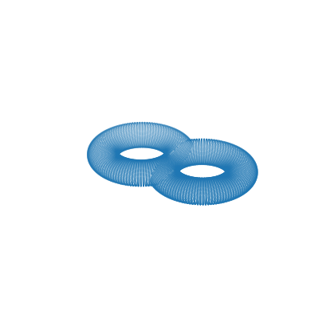
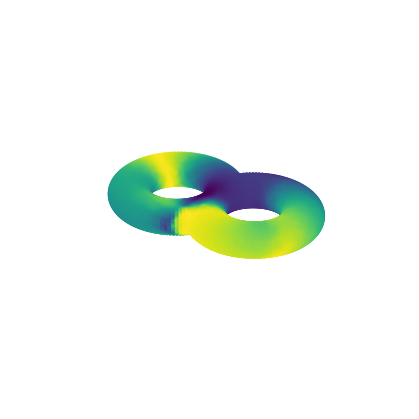

Complex projective coordinates on surface of genus two
We use complex projective coordinate to parametrize the two-dimensional void of a surface of genus two.
[1]:
import matplotlib.pyplot as plt
from dreimac import GeometryExamples, PlotUtils, ComplexProjectiveCoords, ProjectiveMapUtils, GeometryUtils
[2]:
X = GeometryExamples.genus_two_surface()
fig = plt.figure(figsize=(4,4))
ax = fig.add_subplot(projection="3d")
ax.scatter(X[:,0], X[:,1], X[:,2], s=0.1)
PlotUtils.set_axes_equal(ax) ; plt.axis("off") ; fig.subplots_adjust(top=1, bottom=0, left=0, right=1)

[3]:
dist_mat, pointcloud_permutation = GeometryUtils.landmark_geodesic_distance(X, 400, 10)
cpc = ComplexProjectiveCoords(dist_mat, n_landmarks=400, distance_matrix=True)
[4]:
coords = cpc.get_coordinates(perc=0.9, proj_dim=1)
coords_R3 = ProjectiveMapUtils.hopf_map(coords)
Next is the original pointcloud colored by the \(z\)-coordinate of the sphere coordinates obstained with complex projective coordinates.
[5]:
fig = plt.figure(figsize=(8,4))
ax = fig.add_subplot(projection="3d")
Y = X[pointcloud_permutation]
ax.scatter(Y[:,0], Y[:,1], Y[:,2], s=5, c=coords_R3[:,2])
PlotUtils.set_axes_equal(ax) ; plt.axis("off") ; fig.subplots_adjust(top=1, bottom=0, left=0, right=1)
